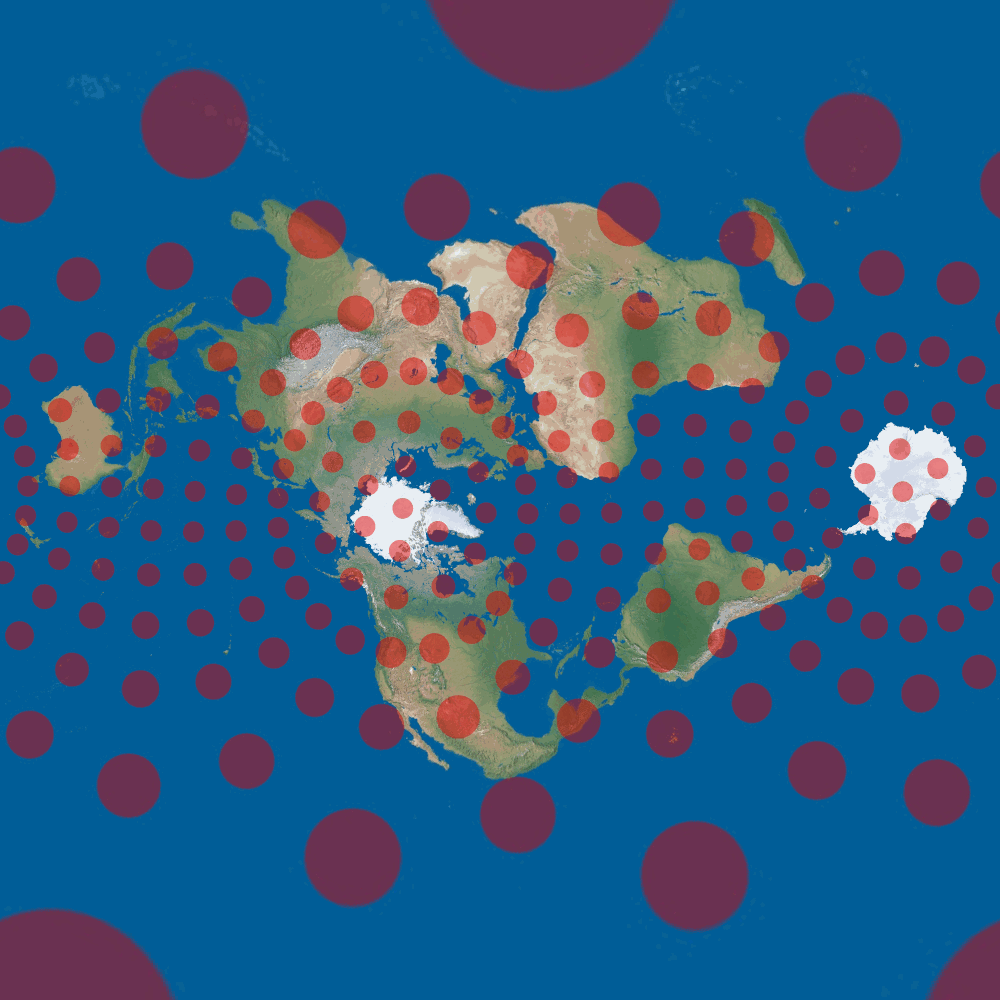
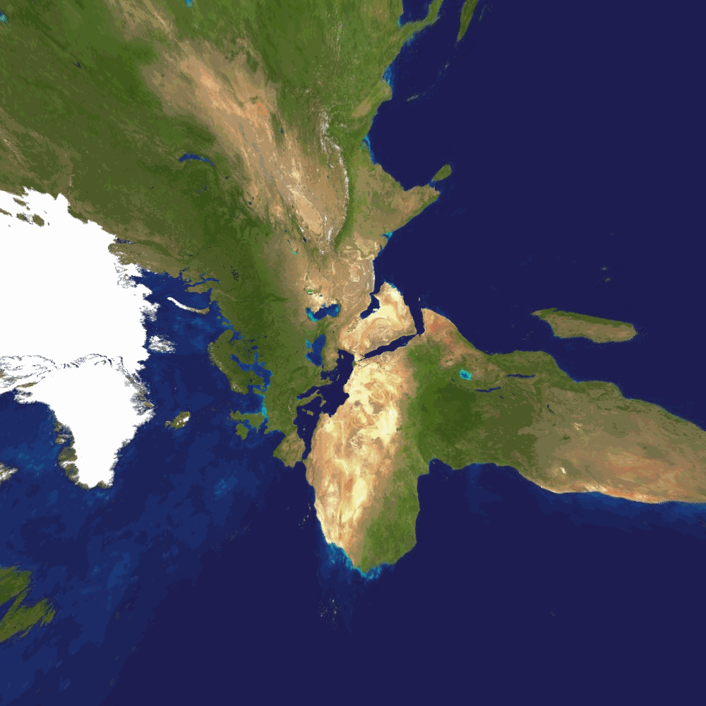
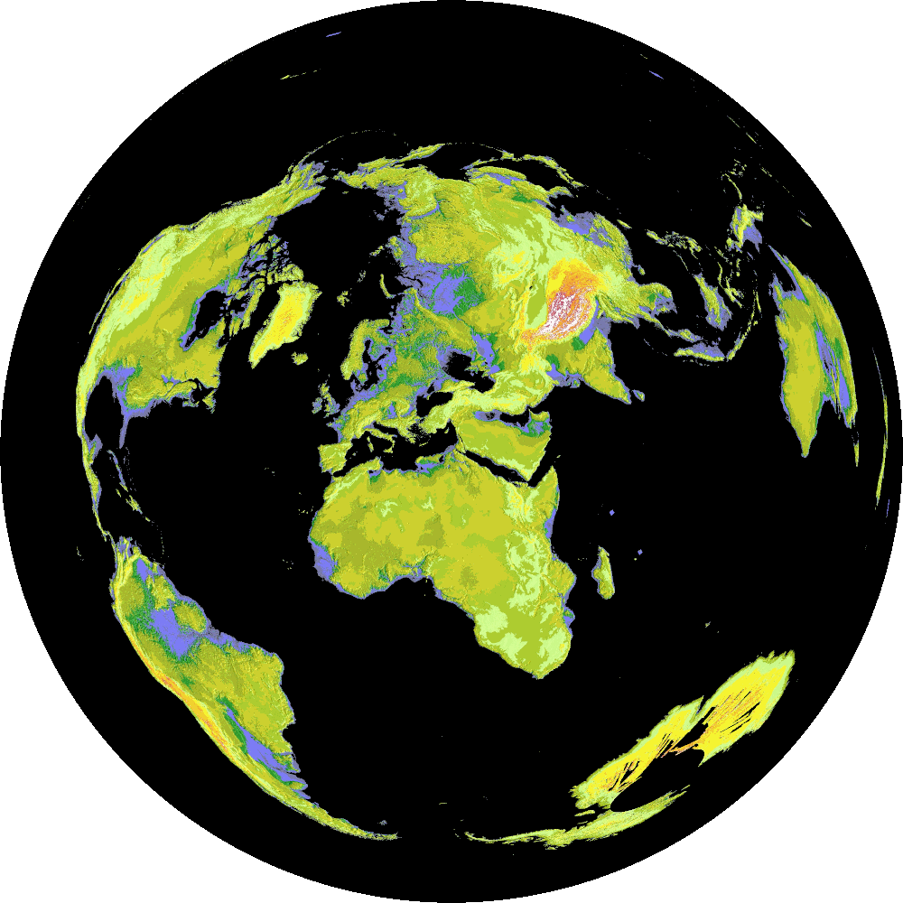
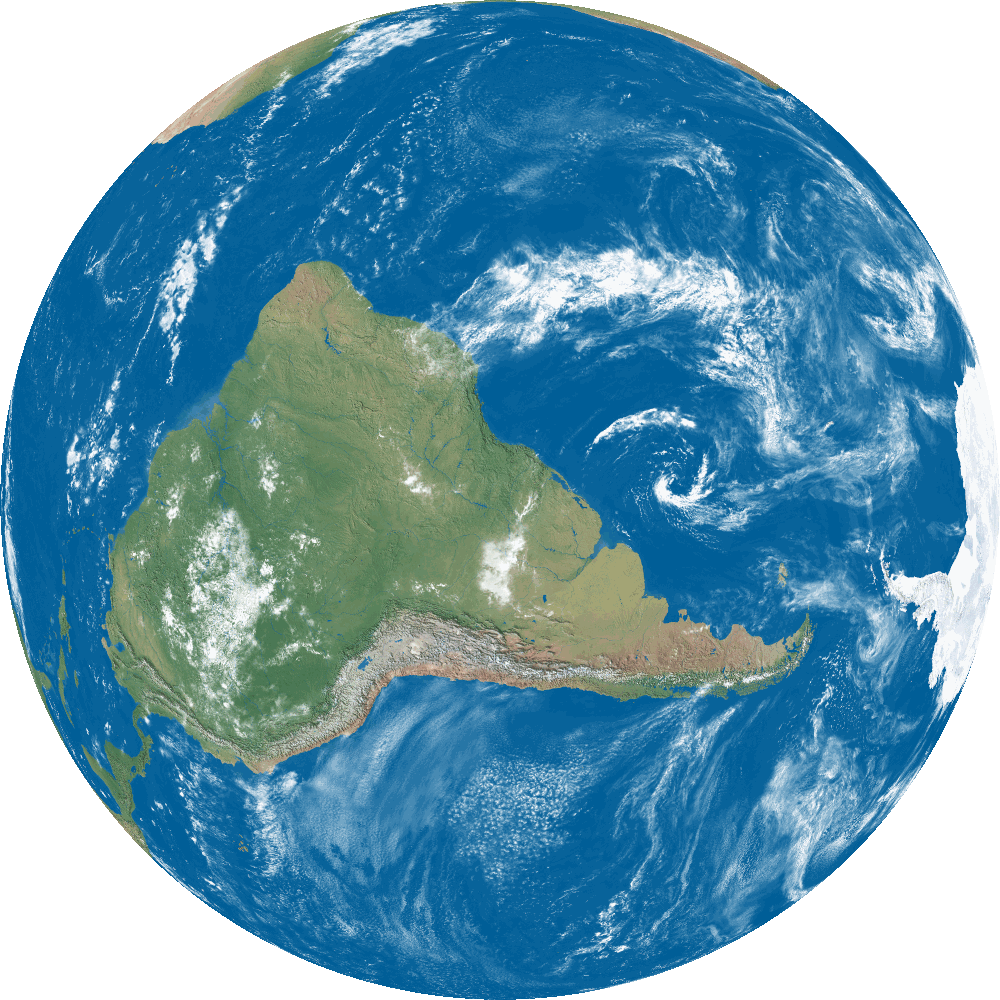
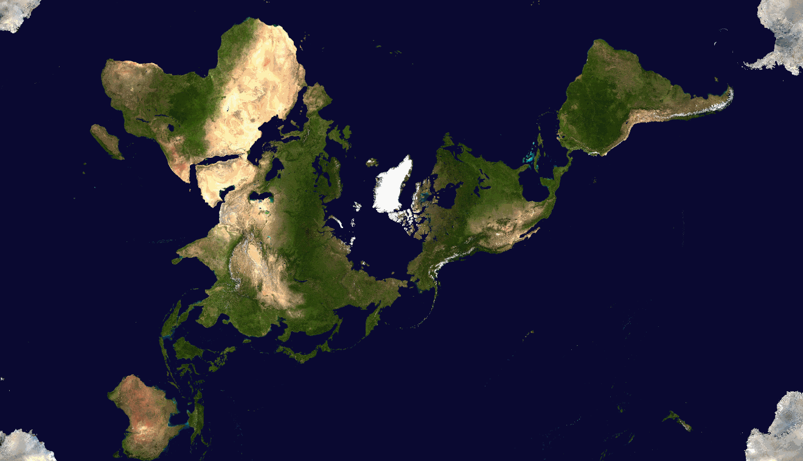
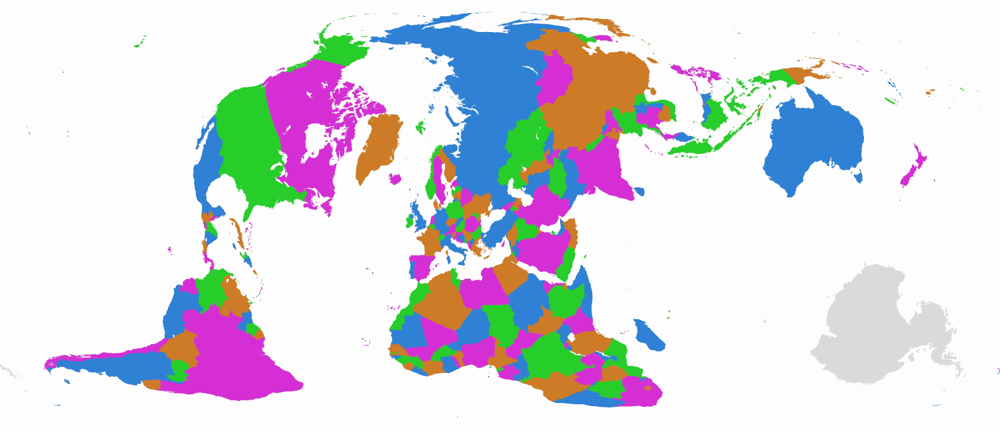
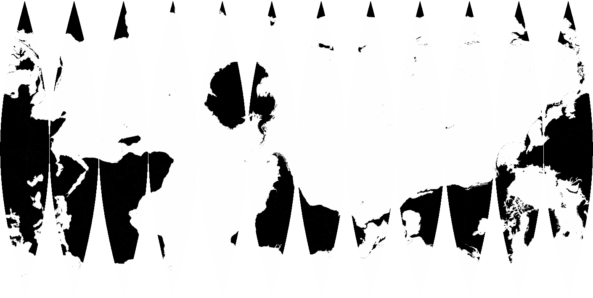

Home
Map Projections is a repository designed to create oblique map projections. Simply extract the zip file, run the MapDesigner.jar executable from it's place in the folder, and create your own map in seconds! There are thousands of combinations of color-schemes, projections, and aspects. Includes Mercator, Mollweide, Orthographic, Peirce-Quincuncial, and more!
Here are just a few images/examples of what you can create with Map Projections.






